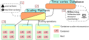
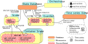

Architecture
High-level diagram
This framework has been designed using a microservice approach in order to ease its development as well as to create specialized units that can be reused or improved in isolation. In addition, by using this paradigm it is also possible to implement a framework that inherently presents an internal parallelism that is useful when dealing with scenarios that require responsiveness, such as is the case with real-time and on-demand resource scaling.
The next image shows a high-level diagram of the scenario on which the framework is deployed:

-
[1] Beginning with the framework's inputs, there are two: 1) the actions, that control the framework's behavior, both performed by an user or by another program through the API; and, 2) the resource monitoring time series, currently provided by an external framework (BDWatchdog), that are used in the policy decision for the resource scaling operations.
-
[2] Continuing with the actual Serverlesss Containers framework, which groups several microservices, some of which are placed on the controlled hosts. The microservices inner workings are further specified on the following sections.
-
[3] And finishing with the controlled infrastructure, which usually consists of several hosts running each one or several containers. Currently only the containers backed by the cgroups file system are supported by design and, more specifically, Linux Containers (LXC) have been used and thus have been proven to work with this framewok.
Microservice architecture
As previously stated, the design followed to create the architecture of this framework uses several microservices that communicate and exchange information. The following image shows a high-level diagram of the microservices layout:

As it can be seen, the microservices can be separated into active and passive ones, with the difference being that the passive ones focus on feedback operations to keep the framework continuously updates on the infrastructure's state, and the active ones that use such information to change the state (the container's resource limits) accordingly as needed.
Passive Microservices
The passive microservices are needed to continuously keep the central database (State Database) updated with all the metada that tracks the state of the infrastructure, from the number of containers and its thresholds to the allocated amounts of resources.
Some passive microservices are used to create aggregated data for entities such as applications (i.e., representing a group of containers) or to persist temporary information into a persistent database.
- Structure Snapshoter: Continuously polls the actually applied limits of the containers and writes that information into the State Database.
- Database Snapshoter: Forwards the information temporarily stored on the State Database to a persistent database, thus creating time series.
- Refeeder Snapshoter: Aggregates and creates new metadata from existing one (e.g., allocated amount of CPU for an application composed of 3 containers)

Active Microservices
The active microservices are the actual ones that perform the scaling of the resources via changing the container resource limits on the underlying cgroups file system through a coordinated chain of events.
As described on the Scaling policy subsection of the Use Case section, in order to perform a scaling operation, the resource usage has to exceed the upper, or drop below the lower limit (1). After a configured time amount has passed on this state, the Guardian microservice will create a scaling request (2) with the specific amount of resource to be changed. Such request will be picked up and processed by the Scaler (3) and applied accordingly (4).
More specific functionalities of the microservices are described next:
- Guardian: Working with time windows, it matches the real resource usages of the containers, as provided with the external resource monitoring, with the container limits stored on the State Database. As a result of the matches it generates scaling requests.
- Scaler: Polls the State Database looking for requests to be applied to the containers.

Other/Common Microservices and Databases
Some microservices have an auxiliar role and are used both by active and passive microservices.
- Orchestrator: Exposes an API that can be used both by humans or scripts to configure the framework.
- Container Scaler: This microservice has to be deployed on every infrastructure node whose hosted containers are to be scaled. This service is able to read and write the crgoups file system to perform the actual resource limit scaling operations.